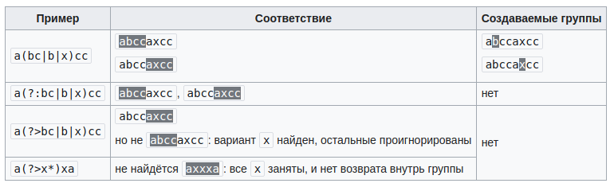

Модуль re
Функции этого модуля:
- re.search(pattern, string)
Функция re.search() используется для поиска первого вхождения шаблона в строке. Если совпадение найдено, функция возвращает объект Match, иначе — None.
Примеры:import re match = re.search(r'\d\d\D\d\d', r'Телефон 123-12-12') print(match[0] if match else 'Not found') # 23-12 match = re.search(r'\d\d\D\d\d', r'Телефон 1231212') print(match[0] if match else 'Not found') # Not found
- re.match(pattern, stroka)
Ищет совпадает ли шаблон (pattern) с началом строки stroka. Если входит, то возвращает True, иначе False.
Паттерн создают через функцию compile
Пример:import re pattern = re.compile(r'([A-Z]\d+)+$') def check_string(s): if pattern.match(s): return True else: return FalseРазница между search() и match():
Допустим, есть строка: «Привет, Мир!». И нужно найти слово «Мир» в этой строке.
Если использовать re.match(), то функция будет искать совпадение с начала строки. В данном случае, она вернет None, так как слово «Мир» не находится в начале строки.Но если использовать re.search(), то функция будет искать совпадение во всей строке. В данном случае, она вернет объект совпадения, так как слово «Мир» есть в строке.
- re.fullmatch(pattern, string)
Проверить, подходит ли строка string под шаблон pattern>>> match = re.fullmatch(r'\d\d\D\d\d', r'12-12') >>> print('YES' if match else 'NO') YES >>> match = re.fullmatch(r'\d\d\D\d\d', r'Т. 12-12') >>> print('YES' if match else 'NO') NO - re.split(pattern, string, maxsplit=0)
Этот метод разделяет строку по заданному шаблону.result = re.split(r'y', 'Analytics') print result Результат: ['Anal', 'tics']
В примере мы разделили слово «Analytics» по букве «y». Метод split() принимает также аргумент maxsplit со значением по умолчанию, равным 0. В данном случае он разделит строку столько раз, сколько возможно, но если указать этот аргумент, то разделение будет произведено не более указанного количества раз. Давайте посмотрим на примеры Python RegEx:result = re.split(r'i', 'Analytics Vidhya') print result Результат: ['Analyt', 'cs V', 'dhya'] # все возможные участки.
result = re.split(r'i', 'Analytics Vidhya',maxsplit=1) print result Результат: ['Analyt', 'cs Vidhya']
Мы установили параметр maxsplit равным 1, и в результате строка была разделена на две части вместо трех.Если в шаблоне нет группирующих скобок, то re.split работает очень похожим образом на str.split. А вот если группирующие скобки в шаблоне есть, то между каждыми разрезанными строками будут все соответствия каждой из подгрупп.
import re print(re.split(r'(\s*)([+*/-])(\s*)', r'12 + 13*15 - 6')) # -> ['12', ' ', '+', ' ', '13', '', '*', '', '15', ' ', '-', ' ', '6']
В некоторых ситуация эта возможность бывает чрезвычайно удобна! Например, достаточно из предыдущего примера убрать лишние группы, и польза сразу станет очевидна!import re print(re.split(r'\s*([+*/-])\s*', r'12 + 13*15 - 6')) # -> ['12', '+', '13', '*', '15', '-', '6']
- re.findall(pattern, string)
Найти в строке string все непересекающиеся шаблоны pattern>>> print(re.findall(r'\d\d\.\d\d\.\d{4}', r'Эта строка написана 19.01.2018, а могла бы и 01.09.2017')) ['19.01.2018', '01.09.2017']Если в шаблоне есть группирующие скобки, то вместо списка найденных подстрок будет возвращён список кортежей, в каждом из которых только соответствие каждой группе. Это не всегда происходит по плану, поэтому обычно нужно использовать негруппирующие скобки (?:...).
import re print(re.findall(r'([a-z]+)(\d*)', r'foo3, im12, go, 24buz42')) # -> [('foo', '3'), ('im', '12'), ('go', ''), ('buz', '42')] - re.finditer(pattern, string)
Итератор по всем непересекающимся шаблонам pattern в строке string (выдаются match-объекты)for m in re.finditer(r'\d\d\.\d\d\.\d{4}', r'Эта строка написана 19.01.2018, а могла бы и 01.09.2017'): print('Дата', m[0], 'начинается с позиции', m.start()) # -> Дата 19.01.2018 начинается с позиции 20 # -> Дата 01.09.2017 начинается с позиции 45 - re.sub(pattern, replace, string, count=0, flags=0)
заменяет символы по заданному паттерну на заданные символы и возвращает исправленную строку.
Параметры:pattern - регулярное выражение
replace - на что нужно заменить pattern
string - строка, к которой нужно применить регулярное выражение
count - необязательный аргумент, максимальное число вхождений, подлежащих замене. Если этот параметр опущен или равен нулю, то произойдет замена всех вхождений.
flags - флаги
Возвращаемое значение:Если совпадения есть - изменённая строка
string, если совпадений нетprint(re.sub(r'\d\d\.\d\d\.\d{4}', r'DD.MM.YYYY', r'Эта строка написана 19.01.2018, а могла бы и 01.09.2017')) # -> Эта строка написана DD.MM.YYYY, а могла бы и DD.MM.YYYY - stroka.re.group()
Искомая подстрока найдена. Чтобы вывести её содержимое, применим метод group() (мы используем «r» перед строкой шаблона, чтобы показать, что это «сырая» строка в Python):result = re.match(r'AV', 'AV Analytics Vidhya AV') print result.group(0) Результат: AV
- re.compile(pattern, repl, string)
Мы можем собрать регулярное выражение в отдельный объект, который может быть использован для поиска. Это также избавляет от переписывания одного и того же выражения.pattern = re.compile('AV') result = pattern.findall('AV Analytics Vidhya AV') print result result2 = pattern.findall('AV is largest analytics community of India') print result2 Результат: ['AV', 'AV'] ['AV']
Функции для поиска шаблона в строке search() match():
Также есть методы start() и end() для того, чтобы узнать начальную и конечную позицию найденной строки.
result = re.match(r'AV', 'AV Analytics Vidhya AV') print result.start() print result.end() Результат: 0 2
Регулярные выражения
Ссылка: Регулярные выражения в Python от простого к сложному.Python RegEx: практическое применение регулярок
Регулярные выражения
Операции с регулярными выражениями
книга Чан Уэсли Дж. Python. создание приложений стр. 31
Регулярное выражение — это строка, задающая шаблон поиска подстрок в тексте. Одному шаблону может соответствовать много разных строчек. Термин «Регулярные выражения» является переводом английского словосочетания «Regular expressions». Перевод не очень точно отражает смысл, правильнее было бы «шаблонные выражения».
Регулярные выражения это, по существу, крошечный язык программирования, встроенный в Python и доступный при помощи модуля re. Используя его, вы указывается правила для множества возможных строк, которые вы хотите проверить; это множество может содержать английские фразы, или адреса электронной почты, или TeX команды, или все что угодно.
Метасимволы
Это набор символов:. ^ $ * + ? { [ ] \ | ( )
1. Квадратные скобки: [ и ]
Первые метасимволы, что мы рассмотрим это [ и ]. Они используются для определения множества символов (классов), с которыми вы ищите совпадение. Символы могут быть перечислены по отдельности, или в виде некоторого диапазона символов, обозначенного первым и последним символом, разделенных знаком '-'. Например, [abc] будет соответствовать любому из символов a, b или c; это то же самое, что выражение [a-c], использующее диапазон для задания того же множества символов. Если вы хотите сопоставить только строчные буквы, РВ будет иметь вид [a-z].
Метасимволы не активны внутри классов. Например, [akm$] будет соответствовать любому из символов 'a', 'k', 'm' или '$'. Знак '$' это обычно метасимвол (как видно из списка символов выше), но внутри класса символов он лишается своей особой природы.
внутри скобок нужно экранировать только ] и \
Для того, чтобы находить соответствие символам вне этого класса, в начале класса добавляется символ '^'. Например, выражение [^5] соответствует любому символу, кроме '5'.
Внутри класса можно указывать диапазоны через символ - . Например классу [a-z 4-8] соответствует люьой маленький символ из диапазона a-z или цифра из диапазона 4-8 .
import re result = re.findall(r'[0-6]', '7 1 2 3 4 8') print(result) Вывод: ['1', '2', '3', '4']
2. Обратная косая черта: \
Пожалуй, наиболее важным является метасимвол обратной косой черты \.
Как и в строковых литералах Python, за бэкслешем могут следовать различные символы, обозначающие разные специальные последовательности.
Он также используется для экранирования метасимволов, чтобы их можно было использовать в шаблонах; например, если нужно найти соответствие [ или \, для того чтобы лишить их своей особой роли метасимволов, перед ним нужно поставить обратную косую черту: \[ или \\.
Для того, чтобы не было таких нагромождений слешей, перед открывающей кавычкой нужно поставить символ r, что скажет питону «не рассматривай \ как экранирующий символ (кроме случаев экранирования открывающей кавычки)». Соответственно можно будет писать r'\\par'
Пример:
text = re.sub('[/#.,\\\\"]', " ", text).lower() # вместо одного \ пишем \\\\
# Или так:
text = re.sub(r'[#.,\\/"]', " ", text).lower() # вначале r' и всё равно вместо одного \ пишем \\
Некоторые из специальных последовательностей, начинающихся с '\' представляют предопределенные наборы символов, часто бывающие полезными, такие как набор цифр, набор букв, или множества всего, что не является пробелами, символами табуляции и т. д. (whitespace). Полный список последовательностей и расширенных определений классов для Юникод-строк смотрите в последней части Regular Expression Syntax.
| \d | любая цифра; эквивалент класса [0-9] | СУ\d\d → СУ35, СУ111, АЛСУ14 |
| \D | любой нечисловой символ; эквивалент класса [^0-9] | 926\D123 → 926)123, 1926-1234 |
| \s | соответствует любому символу whitespace; эквивалент [ \t\n\r\f\v] | бор\sода → бор ода, бор ода, борода |
| \S | любой не-whitespace символ; эквивалент [^ \t\n\r\f\v] | \S123 → X123, я123, !123456, 1 + 123456 |
| \w | Любая буква (то, что может быть частью слова), а также цифра и _, эквивалент [a-zA-Z0-9_] |
\w\w\w → Год, f_3, qwert
используя \w, вытащить два последовательных символа, кроме пробельных, из каждого слова: result = re.findall(r'\w\w', 'AV is largest Analytics community') print result Результат: ['AV', 'is', 'la', 'rg', 'es', 'An', 'al', 'yt', 'ic', 'co', 'mm', 'un', 'it'] |
| \W | наоборот; эквивалент [^a-zA-Z0-9_] | сом\W → сом!, сом? |
| \b | В начале шаблона означает начало слова Если наоборот \b стоит в конце шаблона, то конец слова. Символы ^ и $ типа для начала и конца текста. | \bвал → вал, перевал, Перевалка вал\b → вал, валка |
| \B | Не граница слова: либо и слева, и справа буквы, либо и слева, и справа НЕ буквы | \Bвал →
перевал, вал, Перевалка \Bвал\B → перевал, вал, Перевалка |
Эти последовательности могут быть включены в класс символов. Например, [\s,.] является характер класс, который будет соответствовать любому whitespace-символу или запятой или точке.
3. Точка: .
Один любой символ, кроме новой строки \n.
Пример:
м.л.ко, применяем к молоко, малако,
Им0л0коИхлеб
Если символ - точка, тогда чтобы сказать что точка не метасимвол, нужно перед точкой поставить обратную косую черту: "\." .
4. Символ: ^
Служит для указания, что следующий символ не входит в шаблон.
Также ^ означает начало текста (или строки при модификаторе ?m)
Вытащим первое слово, используя ^:
import re result = re.findall(r'^\w+', 'AV is largest Analytics community of India') print(result) print(re.findall(r'^\w+', 'A BC DEF')) Результат: ['AV'] ['A']
===========================================================
5. Квантификаторы
+ ? * {} используются в квантификаторах (указаниях количества повторений). Квантификатор после символа, символьного
класса или группы определяет, сколько раз предшествующее выражение может встречаться. Следует учитывать, что квантификатор
может относиться более чем к одному символу в регулярном выражении, только если это символьный класс или группа.
| + | Одно или более, синоним {1,} | a\)+ → a), a)) , a))), ba)]) |
| ? | Ноль или одно вхождение, синоним {0,1} | валы? → вал, валы,
валов Символ в паттерне перед ? может или быть или отсутствовать в строке. |
| * | Ноль или более, синоним {0,} | import re result = re.findall(r'СУ\d*', ' СУ СУ57 СУ75 су30 57 СУ543СУ1 СУСУ С5') print(result) # ['СУ', 'СУ57', 'СУ75', 'СУ543', 'СУ1', 'СУ', 'СУ'] |
Жадность в регулярках и границы найденного шаблона
| *? +? ?? {m,n}? {,n}? {m,}? | По умолчанию квантификаторы жадные — захватывают максимально возможное число символов. Добавление ? делает их ленивыми, они захватывают минимально возможное число символов | \(.*\) → (a + b) * (c + d) * (e +
f) \(.*?\) → (a + b) * (c + d) * (e + f) |
Как указано выше, по умолчанию квантификаторы жадные. Этот подход решает очень важную проблему — проблему границы шаблона. Скажем, шаблон \d+ захватывает максимально возможное количество цифр. Поэтому можно быть уверенным, что перед найденным шаблоном идёт не цифра, и после идёт не цифра.
6. Фигурные скобки: {n}
| {n} | Ровно n повторений | d{4} означает 4 цифры: → 1, 12, 123, 1234, 12345 |
| {m,n} | От m до n повторений включительно | \d{2,4} → 1, 12, 123, 1234, 12345 |
| {m,} | Не менее m повторений | \d{3,} → <1, 12, 123, 1234, 12345 |
| {,n} | Не более n повторений | \d{,2} → 1, 12, 123 |
7. Знак доллара $
Конец строки
Если мы используем $ вместо ^, то мы получим последнее слово, а не первое:
result = re.findall(r'\w+$', 'AV is largest Analytics community of India') print result Результат: [‘India’]
Использование дополнительных флагов в питоне
Каждой из функций, перечисленных выше, можно дать дополнительный параметр flags, что несколько изменит режим работы регулярок. В качестве значения нужно передать сумму выбранных констант, вот они:- re.ASCII
По умолчанию \w, \W, \b, \B, \d, \D, \s, \S соответствуют все юникодные символы с соответствующим качеством.
Например, \d соответствуют не только арабские цифры, но и вот такие: ٠١٢٣٤٥٦٧٨٩. re.ASCII ускоряет работу, если все соответствия лежат внутри ASCII. - re.IGNORECASE
Не различать заглавные и маленькие буквы. Работает медленнее, но иногда удобно - re.MULTILINE
Специальные символы ^ и $ соответствуют началу и концу каждой строки - re.DOTALL
По умолчанию символ \n конца строки не подходит под точку. С этим флагом точка — вообще любой символ
import re print(re.findall(r'\d+', '12 + ٦٧')) # -> ['12', '٦٧'] print(re.findall(r'\w+', 'Hello, мир!')) # -> ['Hello', 'мир'] print(re.findall(r'\d+', '12 + ٦٧', flags=re.ASCII)) # -> ['12'] print(re.findall(r'\w+', 'Hello, мир!', flags=re.ASCII)) # -> ['Hello'] print(re.findall(r'[уеыаоэяию]+', 'ОООО ааааа ррррр ЫЫЫЫ яяяя')) # -> ['ааааа', 'яяяя'] print(re.findall(r'[уеыаоэяию]+', 'ОООО ааааа ррррр ЫЫЫЫ яяяя', flags=re.IGNORECASE)) # -> ['ОООО', 'ааааа', 'ЫЫЫЫ', 'яяяя'] text = r""" Торт с вишней1 вишней2 """ print(re.findall(r'Торт.с', text)) # -> [] print(re.findall(r'Торт.с', text, flags=re.DOTALL)) # -> ['Торт\nс'] print(re.findall(r'виш\w+', text, flags=re.MULTILINE)) # -> ['вишней1', 'вишней2'] print(re.findall(r'^виш\w+', text, flags=re.MULTILINE)) # -> ['вишней2']
8. Знак | - перечисления (операция «ИЛИ»)
Чтобы проверить, удовлетворяет ли строка хотя бы одному из шаблонов, можно воспользоваться аналогом оператора or, который
записывается с помощью символа |. Так, некоторая строка подходит к регулярному выражению A|B тогда и только тогда, когда она
подходит хотя бы к одному из регулярных выражений A или B. Например, отдельные овощи в тексте можно искать при помощи шаблона
морковк|св[её]кл|картошк|редиск.
Скобочные группы (?:){}
Зачастую шаблон состоит из нескольких повторяющихся групп. Так, MAC-адрес сетевого устройства обычно записывается как шесть групп из двух шестнадцатиричных цифр, разделённых символами - или :. Например, 01:23:45:67:89:ab. Каждый отдельный символ можно задать как [0-9a-fA-F], и можно весь шаблон записать так:[0-9a-fA-F]{2}[:-][0-9a-fA-F]{2}[:-][0-9a-fA-F]{2}[:-][0-9a-fA-F]{2}[:-][0-9a-fA-F]{2}[:-][0-9a-fA-F]{2}
Ситуация становится гораздо сложнее, когда количество групп заранее не зафиксировано. Чтобы разрешить эту проблему в синтаксисе регулярных выражений есть группировка (?:...). Можно писать круглые скобки и без значков ?:, однако от этого у группировки значительно меняется смысл, регулярка начинает работать гораздо медленнее. Об этом будет написано ниже. Итак, если REGEXP — шаблон, то (?:REGEXP) — эквивалентный ему шаблон. Разница только в том, что теперь к (?:REGEXP) можно применять квантификаторы, указывая, сколько именно раз должна повториться группа. Например, шаблон для поиска MAC-адреса, можно записать так: [0-9a-fA-F]{2}(?:[:-][0-9a-fA-F]{2}){5}
Скобки плюс перечисления
Также скобки (?:...) позволяют локализовать часть шаблона, внутри которого происходит перечисление. Например, шаблон (?:он| тот) (?:шёл|плыл) соответствует каждой из строк «он шёл», «он плыл», «тот шёл», «тот плыл», и является синонимом он шёл|он плыл|тот шёл|тот плыл.Примеры:
| Шаблон | Применяем к тексту |
| (?:\w\w\d\d)+ | Есть миг29а, ту154б. Некоторые делают даже миг29ту154ил86. |
| (?:\w+\d+)+ | Есть миг29а, ту154б. Некоторые делают даже миг29ту154ил86. |
| (?:\+7|8)(?:-\d{2,3}){4} | +7-926-123-12-12, 8-926-123-12-12 |
| (?:[Хх][аоеи]+)+ | Муха — хахахехо, ну хааахооохе, да хахахехохииии! Хам трамвайный. |
| \b(?:[Хх][аоеи]+)+\b | Муха — хахахехо, ну хааахооохе, да хахахехохииии! Хам трамвайный. |
Если функции re.search, re.fullmatch не находят соответствие шаблону в строке, то они возвращают None, функция re.finditer не выдаёт ничего. Однако если соответствие найдено, то возвращается match-объект.
Группирующие скобки (...) без ?:
Если в шаблоне регулярного выражения встречаются скобки (...) без ?:, то они становятся группирующими. В match-объекте, который возвращают re.search, re.fullmatch и re.finditer, по каждой такой группе можно получить ту же информацию, что и по всему шаблону. А именно часть подстроки, которая соответствует (...), а также индексы начала и окончания в исходной строке. Достаточно часто это бывает полезно.
Группировка
Обратная связьОдно из применений группировки — повторное использование ранее найденных групп символов (подстрок, блоков, отмеченных подвыражений, захватов). При обработке выражения подстро́ки, найденные по шаблону внутри группы, сохраняются в отдельной области памяти и получают номер, начиная с единицы. Каждой подстроке соответствует пара скобок в регулярном выражении.
Обычно поддерживается до 9 нумерованных подстрок с номерами от 1 до 9, но некоторые интерпретаторы позволяют работать с бо́льшим количеством. Впоследствии в пределах данного регулярного выражения можно использовать обозначения от \1 до \9 для проверки на совпадение с ранее найденной подстрокой. В некоторых реализациях вместо бэкслеша используется знак доллара.
Например, регулярное выражение (та|ту)-\1 найдёт строку та-та или ту-ту, но пропустит строку та-ту.
Квантификация группы трактуется как многократное сохранение подстроки под одним и тем же номером, то есть запоминается последнее вхождение: например, регулярное выражение (.)+\1 найдёт строку abcc, но пропустит abca.
Также ранее найденные подстро́ки можно использовать при замене по регулярному выражению. В таком случае в замещающий текст вставляются те же обозначения, что и в пределах самого выражения.
Группировка без обратной связи
Если группа используется только для группировки и её результат в дальнейшем не потребуется, то можно использовать группировку
вида (?:шаблон). Под результат такой группировки не выделяется отдельная область памяти и, соответственно, ей не назначается
номер. Это положительно влияет на скорость выполнения выражения, но понижает удобочитаемость.
Атомарная группировка
Атомарная группировка вида (?>шаблон) так же, как и группировка без обратной связи, не создаёт обратных связей. В отличие от
неё, такая группировка запрещает возвращаться назад по строке, если часть шаблона уже найдена.

Тут нужны группировки. Если туговато с их пониманием, как было у меня, читаем и стараемся понять логику:
import re
line = 'abcdef'
pattern = r'(\w)(\w)(\w)(\w+)'
print(re.sub(pattern, r'\3\2\1\4', line))
>>> cbafed
В нашем шаблоне (pattern) есть (\w) повторённая три раза. Операция повторения () даёт нам возможность запомнить "индекс"
элемента шаблона. Этот "индекс" в дальнейшем мы можем вызвать например через \1 что соответствует первому элементу группировки
т.е. \1 == 'a' в данной строке; аналогично и дальше слева направо \2 =='b' \3 == 'с' ,а (\w+) == 'def' то есть остаток
нашей строки.
Таким образом указывая в выводе \3\2\1\4 мы заменяем соответствующие элементы в обратном порядке: \3\2\1 == 'cba' то же самое 'abc' >>>'cba' и прибавляем к ним 'def' через \4.
=================================================================================================================
Функции
Ссылки: Функции, директивы def, returnФункции и их аргументы
Отличие функции от метода:
Важно различать функции и методы в Python, поскольку они используются для разных целей. Функции предназначены для
выполнения общих задач, которые могут быть вызваны из любой части кода, в то время как методы связаны с объектами и
предназначены для выполнения задач, специфичных для конкретного типа объекта. Определение метода всегда включает «self» в качестве первого параметра. Синтаксически метод указывается через точку после объекта, функция ни к чему не привязана.
Для чего нужна функция?
Часто некоторый код нужно выполнить несколько раз. Либо мы хотим как-то изолировать некоторый код, и вызывать его в
необходимом месте.
Этого можно достичь написанием функции.
Определение функции:
Функция в python - объект, принимающий аргументы и возвращающий значение. Обычная функция
определяется с помощью инструкции def. Второй способ с помощью lambda для анонимных функций.
Синтаксис:
def name_f(arg1, arg2,...):
return command
После инструкции def идёт имя функции. В скобках параметры функции.
Аргументы функции
Ссылки: книга Джейда Картера Python библиотеки часть 2 стр. 167В скобках функции переменные, которые называются или аргументы, если вызывается функция, или параметры, если функция объявляется.
Передача аргументов:
Существует несколько способов передачи аргументов функциям. Позиционные аргументы перечисляются в порядке, точно соответствующем порядку записи параметров; именованные (ключевые) аргументы состоят из имени переменной и значения;
наконец, существуют списки и словари значений.
- Позиционные аргументы
При вызове функции каждый аргумент должен быть сопоставлен с параметром в определении функции. Проще всего сделать это на основании порядка перечисления аргументов. Значения, связываемые с аргументами подобным образом, называются позиционными аргументами (positional arguments). - Именованные аргументы
Именованный аргумент (keyword argument) представляет собой пару «имя — значение», передаваемую функции. Имя и значение связываются с аргументом напрямую, так что при передаче аргумента путаница с порядком исключается.fun(12, 123, a = 5, b = 10)
a = 5 и b = 10 - аргументы именованные, 12 и 123 - аргументы позиционныеОднако именованные аргументы должны в скобках перечисляться в конце. То есть, можно вызвать add(1, y=2), add(1, 2), add(x=1, y=2), но нельзя add(x=1, 2).
- Параметры по умолчанию (positional_args_with_defaults)
Для каждого параметра вашей функции можно определить значение по умолчанию (default value). Если при вызове функции передается аргумент, соответствующий данному параметру, то Python использует значение аргумента, а если нет — значение по умолчанию. Таким образом, если для параметра определено значение по умолчанию, то вы можете опустить соответствующий аргумент, который обычно добавляется в вызов функции. Значения по умолчанию упрощают вызовы функций и проясняют типичные способы использования функций.def f(b, a =10)
Здесь a = 10 является параметром по умолчанию.Если вы используете значения по умолчанию, то все параметры со значением по умолчанию должны следовать после параметров, у которых значений по умолчанию нет. Это необходимо для того, чтобы Python правильно интерпретировал позиционные аргументы.
Ещё один важный момент: значение по умолчанию вычисляется только один раз - при первом вызове функции. При всех последующих вызовах будет повторно использован тот объект, который получили при первом вычислении значения по умолчанию.
В случае с неизменяемыми значениями (числа, строки) это поведение ни на что не влияет, а если в значении по умолчанию используется изменяемый тип - то все изменения этого аргумента будут сохраняться между вызовами.
В качестве примера используем новый список как значение по умолчанию для аргумента b:def f(a, b=[]): b.append(a) print(b) f(1) # [1] f(2) # [1, 2] f(3,b=[]) # [3] f(4) # [1, 2, 4] непонятно, почему не 3 4 -
Передача произвольного набора аргументов
В некоторых ситуациях вы не знаете заранее, сколько аргументов должно быть передано функции. К счастью, Python позволяет ей получить произвольное количество аргументов из вызывающего оператора.Для примера рассмотрим функцию для создания пиццы. Она должна получить набор начинок для пиццы, но вы не знаете заранее, сколько начинок закажет клиент. Функция в следующем примере получает один параметр *toppings , но он объединяет все аргументы, заданные в вызывающей строке:
def make_pizza(*toppings): """Выводит список заказанных начинок.""" print(toppings) make_pizza('pepperoni') make_pizza('mushrooms', 'green peppers', 'extra cheese')Благодаря звездочке в имени параметра *toppings Python получает указание создать пустой кортеж toppings и упаковать в него все полученные значения. Python успешно вызывает обе функции: и с одним значением, и с тремя. Обратите внимание: Python упаковывает аргументы в кортеж даже в том случае, если функция получает всего одно значение: ('pepperoni',)
Теперь вызов функции print() можно заменить циклом, который перебирает список начинок и выводит описание заказанной пиццы:def make_pizza(*toppings): """Выводит описание пиццы."""184 Часть I. Основы print("\nMaking a pizza with the following toppings:") for topping inФункция реагирует соответственно, независимо от того, сколько значений получила — одно или три:Making a pizza with the following toppings: - pepperoni Making a pizza with the following toppings: - mushrooms - green peppers - extra cheese
Этот синтаксис работает независимо от количества аргументов, переданных функции. -
Позиционные аргументы с произвольным количеством аргументов
Если вы хотите, чтобы функция могла вызываться одновременно с разным количеством аргументов и с позиционными аргументами, то параметр для получения произвольного количества аргументов должен стоять на последнем месте в определении функции. Python сначала подбирает соответствия для позиционных и именованных аргументов, а затем объединяет все остальные аргументы в последнем параметре. Например, если функция должна получать размер пиццы, то данный параметр должен стоять в списке до параметра *toppings :def make_pizza(size, *toppings): """Выводит описание пиццы.""" print(f"\nMaking a {size}-inch pizza with the following toppings:") for topping in toppings: print(f"- {topping}") make_pizza(16, 'pepperoni') make_pizza(12, 'mushrooms', 'green peppers', 'extra cheese')В определении функции Python сохраняет первое полученное значение в параметре size . Все остальные значения, следующие за ним, сохраняются в кортеже toppings. В вызовах функций на первом месте располагается аргумент для параметра size, а за ним следует сколько угодно начинок. В итоге для каждой пиццы указываются размер и количество начинок, и каждый фрагмент информации выводится в положенном месте: сначала размер, а потом начинки:
Making a 16-inch pizza with the following toppings: - pepperoni Making a 12-inch pizza with the following toppings: - mushrooms - green peppers - extra cheese
По соглашению между программистами в Python в функции c произвольным количеством принимающих параметров принято писать *args вместо *(с каким либо другим названием переменной).
-
Использование произвольного количества именованных аргументов
Иногда программа должна получать произвольное количество аргументов, но вы не знаете заранее, какая информация будет передаваться функции. В таких случаях можно написать функцию, получающую столько пар «ключ — значение», сколько указано в вызывающем операторе. Один из возможных примеров — создание пользовательских профилей: вы знаете, что получите информацию о пользователе, но заранее неизвестно, какую именно. Функция build_profile() в следующем примере всегда получает имя и фамилию, но может получать и произвольное количество именованных аргументов:def build_profile(first, last, **user_info): """Создает словарь, содержащий информацию о пользователе.""" user_info['first_name'] = first user_info['last_name'] = last return user_info user_profile = build_profile('albert', 'einstein', location='princeton', field='physics') print(user_profile)Определение build_profile() ожидает получить имя и фамилию пользователя, а также позволяет передать любое количество пар «имя — значение». Две звездочки перед параметром **user_info заставляют Python создать пустой словарь user_info и упаковать в него все полученные пары «имя — значение». Внутри функции вы можете обращаться к парам «имя — значение» из user_info точно так же, как в любом словаре. В теле build_profile() в словарь user_info добавляются имя и фамилия, поскольку эти два значения всегда передаются пользователем и они еще не были помещены в словарь. Затем словарь user_info возвращается в точку вызова функции. Вызовем функцию build_profile() и передадим ей имя 'albert' , фамилию 'einstein' и еще две пары «ключ — значение»: location='princeton' и field='physics' .
Программа сохраняет возвращенный словарь в user_profile и выводит его содержимое:{'location': 'princeton', 'field': 'physics', 'first_name': 'albert', 'last_name': 'einstein'}Возвращаемый словарь содержит имя и фамилию пользователя, а в данном случае еще и местонахождение, и область исследований. Функция будет работать, сколько бы дополнительных пар «ключ — значение» ни было передано при вызове функции.В программах часто используется имя обобщенного параметра **kwargs , который служит для хранения произвольного набора ключевых аргументов.
При написании функций допускаются самые разнообразные комбинации позиционных, именованных и произвольных значений. Полезно знать о существовании всех этих типов аргументов, поскольку они часто будут встречаться вам при чтении чужого кода. Только практикуясь, вы научитесь правильно использовать разные типы аргументов и поймете, когда следует применять каждый тип; а пока просто используйте самый простой способ, который позволит решить задачу. С опытом вы научитесь выбирать наиболее эффективный вариант для каждой конкретной ситуации.
Обобчающий пример:
def printab(a=50, b=100, *args, **kwargs): print('a =', a) print('b =', b) print('additional positional arguments:') for i in args: # распечатка кортежа print(i) print('additional named arguments:') for key in kwargs: # распечатка словаря print(key, '=', kwargs[key]) printab(10, 20, 25, 35, 45, 50, 60, c=30, d=40, jimmi=12Вывод:
a = 10 b = 20 additional positional arguments: 25 35 45 50 60 additional named arguments: c = 30 d = 40 jimmi = 123
Тело функции:
В следующей строке с отступом идет тело функции.Инструкция return говорит, что нужно вернуть значение. В нашем случае функция возвращает сумму x и y.
Внутри функции может быть какой угодно код, но, если мы хотим вернуть значение, мы обязаны написать return ЧТО_ТО. Если этого не написать, то функция вернёт специальное значение None (некоторый аналог NULL из других языков программирования).
Код после достижения return внутри функции не выполняется.
Внутри программы функция может быть вызвана. Например:
def add(x, y):
return x + y
print(add(1, 2)) # Выведет 3
Согласно PEP 8 после определения функции нужно отступать 2 пустые строчки.
Локальные и глобальные переменные
Переменные, объявленные внутри функции, являются локальными. Если их использовать за пределами выполнения функции, то произойдет ошибка.Глобальные переменные - это переменные объявленные вне функции.
Стек вызовов
Ссылки: Функции и стек вызововСтек вызовов чаще всего служит для хранения функций.
Если интерпретатор видит функцию, он ложит ее в стек, если функция завершает выполнение, он эту функцию снимает.
В стеке всегда в самом низу находится module.
Если return пустой или его вообще не будет, тогда функция будет возвращать объект None. Тип этого None есть NoneType.
Возвращение словаря
Функция может вернуть любое значение, которое вам потребуется, в том числе и более сложную структуру данных (например, список или словарь). Так, следующая функция получает части имени и возвращает словарь, представляющий человека:
def build_person(first_name, last_name):
"""Возвращает словарь с информацией о человеке."""
person = {'first': first_name, 'last': last_name}
return person
musician = build_person('jimi', 'hendrix')
print(musician)
Функция build_person() получает имя и фамилию и сохраняет полученные значения в словаре. Значение first_name сохраняется с ключом 'first' , а значение last_name — с ключом 'last' . Затем весь словарь с описанием человека возвращается. Значение выводится с двумя исходными фрагментами текстовой информации, теперь хранящимися в словаре:{'first': 'jimi', 'last': 'hendrix'}
Функция получает простую текстовую информацию и помещает ее в более удобную структуру данных, которая позволяет работать с информацией (помимо простого вывода). Строки 'jimi' и 'hendrix' теперь помечены как имя и фамилия. Функцию можно легко расширить так, чтобы она принимала дополнительные значения — второе имя, возраст, профессию или любую другую информацию о человеке, которую вы хотите сохранить. Например, следующее изменение позволяет сохранить возраст человека:
def build_person(first_name, last_name, age=''):
"""Возвращает словарь с информацией о человеке."""
person = {'first': first_name, 'last': last_name}
if age:
person['age'] = age
return person
musician = build_person('jimi', 'hendrix', age=27)
print(musician)
Передача неизменяемых объектов в функцию
При передаче неизменяемых объектов (int, str) все операции над ними внутри тела функции не меняют эти объекты, потому что эти объекты неизменяемые и все операции внутри функции будут проходить над независимыми копиями оригинальных объектов.Передача изменяемых объектов в функцию
Совсем другая ситуация при передаче изменяемых объектов (list, dict). В этом случае операции внутри функции будут менять внешний объект.Для того чтобы избежать изменения внешних объектов внутри функции, можно сделать копию объекта. Копию можно создавать как внутри функции, так и до вызова функции. В данном примере создается поверхностная копия внешнего объекта через метод copy():
def my_funk(some_mutable_obj):
copy_person = some_mutable_obj.copy()
copy_person.append(10)
return copy_person
person = [1, 2, 3]
my_funk(person)
СаllЬасk-функции
СаllЬасk-функция - это функция, которая передается как аргумент в другую функцию и там вызывается.
def other_funk():
pass
def main_funk(callback_funk):
callback_funk()
main_funk(other_funk)
Функцию other_funk() передали как аргумент и в теле внешней функции она выполняется.other_funk() является callback-функцией.
название функции other_fn. Очень важно не вызывать функцию other_funk, а просто указывать её имя. Это означает, что при вызове функции main_funk() переменная other_funk и переменная callback_funk будут ссылаться на один и тот же объект в памяти, который хранит в себе функцию other_funk().
Функция является объектом, причём как написано в книге Билла Любановича Простой python, объектом первого ранга. Можете использовать функции как элементы списков, кортежей, множеств и словарей. Функции неизменяемы, поэтому вы можете даже применять их как ключи для словарей.
Модули
Модуль - это файл с расширением py . Модули можно импортировать в свой скрипт. Также существуют пакеты. Пакет - это каталог, содержащий как правило несколько модулей, но обязательно файл __init__.py . Пакеты также импортируют, в этом случае в скрипте будут доступны все модули из пакета.Существует несколько способов импортирования модулей.
Импортирование модуля целиком
Чтобы заняться импортированием функций, сначала необходимо создать модуль. Это файл с расширением .py , содержащий код, который вы хотите импортировать в свою программу. Создадим модуль с функцией make_pizza() . Для этого из файла pizza.py следует удалить все, кроме функции make_pizza() :В файле pizza.py:
def make_pizza(size, *toppings):
"""Выводит описание пиццы."""
print(f"\nMaking a {size}-inch pizza with the following toppings:")
for topping in toppings:
print(f"- {topping}")
Теперь создадим отдельный файл making_pizzas.py в одном каталоге с pizza.py . Файл импортирует только что созданный модуль, а затем дважды вызывает функцию make_pizza() :В файле making_pizzas.py
import pizza pizza.make_pizza(16, 'pepperoni') pizza.make_pizza(12, 'mushrooms', 'green peppers', 'extra cheese')В процессе обработки этого файла благодаря строке import pizza Python получает указание открыть файл pizza.py и скопировать все функции из него в программу. Вы не видите, как происходит копирование, поскольку Python копирует код незаметно для пользователя, пока выполняется программа. Вам необходимо знать одно: любая функция, определенная в pizza.py , будет доступна в making_pizzas.py .
Чтобы вызвать функцию из импортированного модуля, введите имя модуля ( pizza ), точку и имя функции ( make_pizza() ). Код выдает тот же результат, что и исходная программа, в которой модуль не импортировался:
Making a 16-inch pizza with the following toppings: - pepperoni Making a 12-inch pizza with the following toppings: - mushrooms - green peppers - extra cheeseПервый способ импортирования, при котором пишется оператор import с именем модуля, открывает доступ программе ко всем функциям из модуля. Если вы используете эту разновидность оператора import для импортирования всего модуля имя_модуля.py , то каждая функция модуля будет доступна в следующем синтаксисе:
имя_модуля.имя_функции()
Импортирование конкретных функций из модуля
Общий синтаксис для импортирования конкретной функции из модуля выглядит так:from имя_модуля import имя_функцииВы можете импортировать любое количество функций из модуля, разделив их имена запятыми:
from имя_модуля import функция_0, функция_1, функция_2Если ограничиться импортированием лишь той функции, которую вы намереваетесь использовать, то пример making_pizzas.py будет выглядеть так:
from pizza import make_pizza make_pizza(16, 'pepperoni') make_pizza(12, 'mushrooms', 'green peppers', 'extra cheese')При таком синтаксисе использовать точечную нотацию (dot notation) при вызове функции необязательно. Функция make_pizza() явно импортируется в операторе import , поэтому при использовании ее можно вызывать прямо по имени.
Назначение псевдонима для функции
Если имя импортируемой функции может конфликтовать с именем существующей или является слишком длинным, то его можно заменить коротким уникальным псевдонимом (alias) — альтернативным именем для функции. Псевдоним назначается функции при импортировании. В следующем примере функции make_pizza() назначается псевдоним mp() , для чего при импортировании используется конструкция make_pizza as mp . Ключевое слово as переименовывает функцию, используя указанный псевдоним:from pizza import make_pizza as mp mp(16, 'pepperoni') mp(12, 'mushrooms', 'green peppers', 'extra cheese')Оператор import в этом примере назначает функции make_pizza() псевдоним mp() для этой программы. Каждый раз, когда потребуется вызвать make_pizza() , достаточно добавить вызов mp() — Python выполнит код make_pizza() , избегая конфликтов с другой функцией make_pizza() , которую вы могли добавить в этот файл программы.
Общий синтаксис назначения псевдонима выглядит так:
from имя_модуля import имя_функции as псевдоним
Назначение псевдонима для модуля
Псевдоним можно назначить для всего модуля. Назначение короткого имени для модуля — скажем, p для pizza — позволит вам быстрее вызывать функции модуля. Вызов p.make_pizza() получается более компактным, чем pizza.make_pizza() :import pizza as p p.make_pizza(16, 'pepperoni') p.make_pizza(12, 'mushrooms', 'green peppers', 'extra cheese')Модулю pizza в операторе import назначается псевдоним p , но все функции модуля сохраняют свои исходные имена. Вызов функций в записи p.make_pizza() не только компактнее pizza.make_pizza() , но и отвлекает внимание от имени модуля и помогает сосредоточиться на описательных именах функций. Благодаря этим именам, четко показывающим, что делает каждая функция, ваш код читать намного удобнее, чем если бы вы использовали полное имя модуля.
Общий синтаксис выглядит так:
import имя_модуля as псевдоним
Импортирование всех функций модуля
Можно дать Python указание импортировать каждую функцию в модуле; для этого используется оператор * :from pizza import * make_pizza(16, 'pepperoni') make_pizza(12, 'mushrooms', 'green peppers', 'extra cheese')Благодаря звездочке в коде оператора import Python получает указание скопировать каждую функцию из модуля pizza в файл программы. После импортирования всех функций вы сможете вызывать каждую из них по имени, не используя точечную нотацию. Тем не менее лучше не использовать этот способ с большими модулями, написанными другими разработчиками; если модуль содержит функцию, имя которой совпадает с существующим именем из вашего проекта, то возможны неожиданные результаты. Python обнаруживает несколько функций или переменных с одинаковыми именами, и вместо импортирования всех функций по отдельности происходит их замена. В таких ситуациях лучше всего импортировать только нужную функцию или функции либо импортировать весь модуль и использовать точечную нотацию. При этом создается чистый код, легкочитаемый и понятный. Я добавил этот под- раздел только для того, чтобы вы могли распознать подобные операторы import , когда встретите их в чужом коде:
from имя_модуля import *
Пространство имён и область видимости
Ссылки: Пространства имен и области видимости в PythonКнига Билл Любанович простой Python стр. 134
Каждый скрипт имеет так называемые пространства имён. Пространство имён - это по-существу словарь, где ключ - это имя переменной, а значение ключа - это значение переменной (объект).
Скрипт может иметь несколько пространств имён. Каждая функция имеет своё пространство имён.
Каждый скрипт имеет глобальное пространство имён, а переменные, находящиеся в этом пространстве имен, являются глобальными. Функция имеет локальное пространство имён, а переменные, объявленные в функции, называются локальными.
Область видимости глобальных и локальных переменных
Внутри функции можно получить значение глобальной переменной, но если попробуем изменить её, то получим исключение UnboundLocalError:
number = 10
def print_number():
print(number)
# number += 10 # если уберём комментарий, то 'UnboundLocalError: local variable 'number' referenced before assignment'
print_number() # 10
Если мы инициализируем number, то это будет локальная переменная number, не имеющая никакого отношения к глобальной переменной number:
number = 10
def print_number():
number = 20
number += 10
print(number)
print_number() # 30
print(number) # 10
Чтобы получить доступ к глобальной переменной вместо локальной переменной внутри функции, вам нужно явно использовать ключевое слово global:
number = 10
def print_number():
global number
number += 10
print(number) # теперь исключения UnboundLocalError нет
print_number() # 20
Посмотреть глобальное и локальное пространства имён можно через функции globals() и locals():
number = 10
def print_number():
number = 100
print("Словарь локальных переменных внутри функции:")
print(locals())
print_number()
print("Глобальные переменные:")
print(globals())
|
Вывод:
Словарь локальных переменных внутри функции:
{'number': 100}
Глобальные переменные:
{'__name__': '__main__', '__doc__': None, '__package__': None, '__loader__': <_frozen_importlib_external.SourceFileLoader
object at 0x7f05185504f0>, '__spec__': None, '__annotations__': {}, '__builtins__': <module 'builtins' (built-in)>,
'__file__': 'test.py', '__cached__': None, 'number': 10, 'print_number': <function print_number at 0x7f05183b98b0>}
По-видимому правильно словарь локальных переменных выводить только внутри функции, если вне, то полностью совпадает с глобальными переменными.
Интерпретатор Python ищет имена согласно правилу LEGB (Local, Enclosed, Global, Built-in).
Встроенное пространство имен builtins содержит имена всех встроенных объектов, которые всегда доступны при работе в Python. Вы можете перечислить объекты во встроенном пространстве с помощью следующей команды:
>>> dir(__builtins__)Первое пространство имен - builtins, создается когда запускаем интерпретатор.
Глобальное пространство имен nain содержит имена, определенные на уровне основной программы, и создаётся сразу при запуске тела этой программы. Сохраняется же оно до момента завершения работы интерпретатора.
Строго говоря, могут существовать и другие глобальные пространства имен. Интерпретатор также создает пространство данного типа для любого модуля, загружаемого программой при помощи выражения import.
nain, является глобальным, создается когда создаем функцию или что-то делаем с переменной.
Интерпретатор создает новое пространство имен при каждом выполнении функции. Это пространство является локальным для функции и
сохраняется до момента завершения ее действия.
Локальное пространство имен содержит аргументы функции и локальные переменные (объявленные внутри функции).
Наличие нескольких отличных пространств имен означает, что в процессе выполнения программы Python несколько разных экземпляров одного имени могут существовать одновременно. Пока каждый из них находится в собственном пространстве, все они обслуживаются по отдельности, и путаницы не происходит.
Но тут возникает вопрос. Предположим, что вы ссылаетесь на имя x в коде, а оно существует в нескольких пространствах. Как Python узнает, какое именно вы имеете в виду?
Область видимости в Python
Ответ кроется в понятии области видимости имени, представляющей из себя часть программы, в которой данное имя обладает значением. Интерпретатор определяет эту область в среде выполнения, основываясь на том, где располагается определение имени и из какого места в коде на него ссылаются.Интерпретатор Python ищет имена согласно правилу LEGB (Local, Enclosed, Global, Built-in). Например, если вы указываете какое-то имя, Python сначала будет искать его последовательно в локальной, вложенной, глобальной и встроенной области видимости. Это означает следующее: поиск имени осуществляется внутри функции (локальная область), далее внутри тех функций, в которых располагается наша функция (вложенная область), далее в скрипте (глобальная область) и в конце, если имя не было найдено ранее, в зарезервированных значениях Python (встроенная область).
def a():
print(x)
def b():
x = 1
a()
b()#NameError
Функция b() вызывает функцию a(), зоны видимости функций не включены друг в друга. Т. е. интерпретатор не найдя имя 'x' в зоне видимости a() перейдёт в глобальную зону видимости, потом в зону видимости builtins - и не обнаружит 'x'. В результате: NameError
def b():
def a():
print(x)
x = 1
a()
b()#1
Функция b() также вызывает функцию a(), но теперь a() определена внутри b(). Т. е. интерпретатор не найдя имя 'x' в зоне
видимости a() перейдёт в зону видимости b() и найдет 'x' . Результат: 1
def outer_func(who):
def inner_func():
print(f"Hello, {who}")
inner_func()
>>> outer_func("World!")
Hello, World!
Теперь мы можем передать строку в качестве аргумента функции outer_func(), и inner_func() будет обращаться к этому аргументу
через имя who. Это имя определяется в локальной области видимости outer_func(). Имена, которые мы определяем в локальной
области внешней функции, определяются как nonlocal. Они нелокальны с точки зрения вложенной функции inner_func().
Функция генератор
Генератор в Python — это специальная функция, которая возвращает итератор, с помощью которого можно обойти некоторую последовательность значений. Отличительной особенностью генераторов является использование ключевого слова yield вместо return для возврата значений. Когда функция-генератор вызывается, она не выполняет своё тело сразу, а возвращает объект-генератор, итерация по которому будет выполнять тело функции и возвращать значения по мере их генерации.Пример простого генератора, который возвращает числа от 0 до n: 1
def simple_generator(n):
i = 0
while i <= n:
yield i
i += 1
for num in simple_generator(5):
print(num)
Генераторы полезны в тех случаях, когда нужно обрабатывать большие объёмы данных, и не хочется загружать их все в память сразу. Например, можно использовать генератор для чтения большого файла построчно, не загружая его целиком в память.
Также в Python существует ещё один способ создания генераторов — генераторные выражения. Они напоминают списковые включения, но используют круглые скобки вместо квадратных и создают объект-генератор, а не список. Вот пример генераторного выражения, которое возвращает квадраты чисел от 0 до n:
n = 5
squares_generator = (i * i for i in range(n + 1))
for square in squares_generator:
print(square)
============================================================================================================
Рекурсивные функции
Рекурсия — это распространенная техника, которая часто ассоциируется с функциональным программированием. Основная идея заключается в следующем: если дана сложная задача, попробуйте найти процедуру, которая превращает исходную задачу в более простую версию той же задачи. Применяйте ту же процедуру несколько раз, чтобы делать задачу все проще и проще, пока не получите настолько простую задачу, что сможете решить ее за один подход.Питонист может посмотреть на некоторые примеры рекурсии и подумать, что было бы проще написать цикл и обычно рекомендуется решить задачу через цикл. Тем не менее, существует множество задач, которые по своей природе являются рекурсивными. Их было бы очень трудно решить каким-либо другим способом, поэтому рекурсия обязательно должна быть в вашем арсенале.
Рекурсивная функция — это функция, которая вызывает сама себя в процессе своего выполнения. Структурно она состоит из двух основных частей: базового случая и рекурсивного случая.
Базовый случай (Base Case): Это условие, которое останавливает рекурсию. Без этого условия рекурсивная функция будет вызывать саму себя бесконечно, что приведёт к переполнению стека вызовов. Базовый случай обычно представляет собой простое условие, при котором функция возвращает результат без дальнейших рекурсивных вызовов.
Рекурсивный случай (Recursive Case): Это часть, где функция вызывает сама себя. Здесь важно, чтобы каждый последующий вызов приближал функцию к базовому случаю, уменьшая проблему или изменяя данные таким образом, чтобы в конечном итоге достигнуть базового случая.
Для успешной работы рекурсивной функции, чёткое определение базового и рекурсивного случаев является ключевым. Базовый случай обеспечивает "точку остановки", предотвращая бесконечную рекурсию. Рекурсивный случай же обрабатывает часть задачи и делает рекурсивный вызов с "меньшей" или "измененной" версией исходной задачи.
В качестве простейшего примера рассмотрите следующий код:
def factorial(n):
if n == 1: # Базовый случай
return 1
else:
return n * factorial(n - 1) # Рекурсивный случай
Хвостовая рекурсия и её оптимизация
Хвостовая рекурсия возникает, когда рекурсивный вызов является последним действием функции, то есть нет необходимости сохранять контекст текущего вызова. В хвостово-рекурсивной функции возвращаемое значение рекурсивного вызова сразу же возвращается из функции.
Пример хвостовой рекурсии:
def tail_fact(n, acc=1):
# Base case
if n == 0:
return acc
# Tail recursive call with an accumulator
else:
return tail_fact(n-1, acc * n)
Пример не хвостовой рекурсии:
def nontail_fact(n):
# Base case
if n == 1:
return 1
# Рекурсивный вызов без хвоста, потому что умножение происходит после вызова
else:
return n * nontail_fact(n-1)
print(tail_fact(5))
print(nontail_fact(5))
Output
120
120
Оптимизация:
Если речь идет о хвостовой рекурсии, рекурсивный вызов функции обычно можно заменить циклом. В Python, как правило, так и следует делать!
Мемоизация в рекурсивных функциях
Мемоизация — это техника оптимизации, которая включает сохранение результатов выполнения функций для предотвращения повторных
вычислений при последующих вызовах с теми же аргументами.
Применение в рекурсии:
Мемоизация особенно полезна в рекурсивных функциях с большим количеством повторяющихся вызовов, например, при вычислении чисел
Фибоначчи.
Реализуется путём сохранения возвращаемых значений в структуру данных (например, в словарь) и проверки, был ли данный вызов
функции уже выполнен ранее.
Множественная рекурсия
Множественная рекурсия возникает, когда в теле функции происходит более одного рекурсивного вызова.
Примеры:
Примером множественной рекурсии может служить алгоритм быстрой сортировки, где рекурсивные вызовы происходят для двух половин
массива.
Другой пример — бинарное дерево поиска, где рекурсивные вызовы идут как для левой, так и для правой ветви дерева.
Отслеживание рекурсии
void A(n){
if(n>=1){
A(n-1);
print(n);
}
}
Значение переменной при возврате из рекурсивной функции
Переменная неизменяемого (immutable) типа:
def funk(x):
x +=1
print("X=", x)
if x !=5:
funk(x)
print("X в обратке = ", x)
else:
print("End, X=", x)
return
funk(1)
Вывод:
X= 2
X= 3
X= 4
X= 5
End, X= 5
X в обратке = 4
X в обратке = 3
X в обратке = 2
и с изменяемым типом переменной (list):
def funk(x):
x.append(x[-1]+1)
print("Последний элемент=", x[-1])
if x[-1] !=5:
funk(x)
print("X в обратке = ", x)
else:
print("end, X=", x)
return
funk([0,1])
Вывод:
Последний элемент= 2
Последний элемент= 3
Последний элемент= 4
Последний элемент= 5
End, X= [0, 1, 2, 3, 4, 5]
X в обратке = [0, 1, 2, 3, 4, 5]
X в обратке = [0, 1, 2, 3, 4, 5]
X в обратке = [0, 1, 2, 3, 4, 5]
Видно, что список x при обратке имеет всегда значение, равное в последней рекурсивной функции.
Чтобы переменная изменяемого типа сохраняла свое значение, равное до вызова рекурсивной функции, при возврате из рекурсии, делают копирование, простейший способ через срез: y = x[:]
def funk(x):
x.append(x[-1]+1)
print("Последний элемент=", x[-1])
if x[-1] !=5:
y = x[:]
funk(y)
print("X в обратке = ", x)
print("Y в обратке = ", y)
else:
print("end, X=", x)
return
funk([0,1])
Вывод:
Последний элемент= 2
Последний элемент= 3
Последний элемент= 4
Последний элемент= 5
end, X= [0, 1, 2, 3, 4, 5]
X в обратке = [0, 1, 2, 3, 4]
Y в обратке = [0, 1, 2, 3, 4, 5]
X в обратке = [0, 1, 2, 3]
Y в обратке = [0, 1, 2, 3, 4]
X в обратке = [0, 1, 2]
Y в обратке = [0, 1, 2, 3]
Теперь видим, что список x сохраняет значение.
Что делать, если переменная - число (неизменяемый тип) и в каждом блоке функции имеет значение только в этом блоке, а нужно чтобы при возврате переменная не изменялась с точки перелома.
То есть, если взять первый пример, то:
def funk(x):
x +=1
print("X=", x)
if x !=5:
funk(x)
print("X в обратке = ", x)
else:
print("End, X=", x)
return
funk(1)
Вывод:
X= 2
X= 3
X= 4
X= 5
End, X= 5
X в обратке = 4 # я хочу, чтобы было 5
X в обратке = 3 # я хочу, чтобы было 5
X в обратке = 2 # я хочу, чтобы было 5
Если возвращать с точки перелома эту переменну и присваивать самой себе, то:
def funk(x):
x +=1
print("X=", x)
if x !=5:
x = funk(x)
print("X в обратке = ", x)
else:
print("End, X=", x)
return x
funk(1)
то вывод:
X= 2
X= 3
X= 4
X= 5
End, X= 5
X в обратке = 5
X в обратке = None
X в обратке = None
Не то.
Введу под вызовом рекурсии возврат.
def funk(x):
x +=1
print("X=", x)
if x !=5:
x = funk(x)
print("X в обратке = ", x)
return x
else:
print("End, X=", x)
return x
funk(1)
Вывод:
X= 2
X= 3
X= 4
X= 5
End, X= 5
X в обратке = 5
X в обратке = 5
X в обратке = 5
Вот теперь то, что я хотел.
lambda - функции
Ссылки: Как использовать в Python лямбда-функцииСинтаксис:
name = lambda arguments: expression(arguments)lambda-функциям эквивалентен следующий код:
def name(*arguments):
return expression(arguments)
expression(arguments) - это выражение. В объект name записывается результат выражения от argument.
Шаблоны выполнения анонимной функции:
Через переменную:
>>> a = lambda x, y: x + y >>> a(1, 3) 4 |
Можно и без присваивания переменной выполнять лямбду-функцию, через нижнюю черточку:
>>> lambda x, y: x + y <function <lambda> at 0x7f2de74533a0> >>> _(1, 2) 3 |
Другой шаблон — это немедленное выполнение лямбда-функции. Это называется выражением немедленного вызова функции (IIFE
— Immediately Invoked Function Expression, произносится «iffy»).
>>> (lambda x, y: x + y)(2, 3) 5 |
Аргументы
Как и обычный объект функции, определенный с помощью def, лямбда поддерживают все различные способы передачи аргументов. Это включает:- Позиционные аргументы
- Именованные аргументы (иногда называемые ключевыми аргументами)
- Переменный список аргументов (часто называемый varargs)
- Переменный список аргументов ключевых слов
- Аргументы только для ключевых слов
>>> (lambda x, y, z: x + y + z)(1, 2, 3) 6 >>> (lambda x, y, z=3: x + y + z)(1, 2) 6 >>> (lambda x, y, z=3: x + y + z)(1, y=2) 6 >>> (lambda *args: sum(args))(1,2,3) 6 >>> (lambda **kwargs: sum(kwargs.values()))(one=1, two=2, three=3) 6 >>> (lambda x, *, y=0, z=0: x + y + z)(1, y=2, z=3) 6
lambda-функции в качестве аргумента функции или наоборот
Лямбда-функции часто используются с функциями более высокого порядка, которые принимают одну или несколько функций в качестве аргументов или возвращают одну или несколько функций.Лямбда-функция может быть функцией более высокого порядка, принимая функцию (нормальную или лямбда-функцию) в качестве аргумента, как в следующем надуманном примере:
>>> high_ord_func = lambda x, func: x + func(x) >>> high_ord_func(2, lambda x: x * x) 6 >>> high_ord_func(2, lambda x: x + 3) 7Здесь вызывается лямбда-функция по шаблону через переменную с двумя аргументами, где второй аргумент сам является лямбда- функцией.
==========================================================================================================================
Внутренние функции
Вы можете определить функцию внутри другой функции:
def outer(a, b):
def inner(c, d):
return c + d
return inner(a, b)
print(outer(4, 7)) # 11
out1 = outer(5, 8)
print(out1) # 13
print(type(out1)) # <class 'int'>
print(inner(5, 6)) # NameError: name 'inner' is not defined (локальный объект, вне внешней функции не виден)
Внутренние функции могут быть полезны при выполнении некоторых сложных задач более одного раза внутри другой функции. Это позволит избежать использования циклов или дублирования кода. Рассмотрим пример работы со строкой, когда внутренняя функция добавляет текст к своему аргументу:
def knights(saying):
def inner(quote):
return f"We are the knights who say: {quote}"
return inner(saying)
print(knights('Ni!')) # We are the knights who say: 'Ni!'
ppp = knights('PPPPP')
print(ppp) # We are the knights who say: PPPPP
print(type(ppp)) # <class 'str'>
|
Замыкание
Замыкание в Python - это функция, находящая внутри другой функции, но в отличии от внутренней функции результат при вызове внешней функции сразу отсутствует, но имеется способность запоминать аргумент при первом вызове внешней функции.Замыкание может использоваться, чтобы динамически создавать функции, которые проделывают какой-то набор одних и тех же действий, но над разными объектами, которые передаются в эти функции.
Следующий пример создан на основе предыдущего примера knights() . Назовем новую функцию knights2() и превратим внутреннюю функцию inner() в замыкание, которое называется inner2() . Различия заключаются в следующем:
- inner2() использует внешний параметр saying непосредственно, вместо того чтобы получить его как аргумент.
- knights2() возвращает имя функции inner2 , вместо того чтобы вызывать ее:
def knights2(saying):
def inner2():
return f"We are the knights who say: {quote}"
return inner2
print(knights2('Duck'))# <function knights2. |
Из-за того, что в строке return inner2 мы возвращаем переменную-функцию, но не вызов функции, выполнение внешней функции видимого результата не даёт. Только после того,как присвоили функцию переменной, а потом переменную вызвали как функцию, получаем результат.
Другой пример замыкания, построенное с помощью обычной функции Python:
def mult(num1):
def inner(num2): # функция-замыкание
return num1 * num2
return inner
mult_by_2 = mult(2) # ссылается на inner() и вроде как не вызывает (не выполняет) при инициализации функцию mult(2)
print(mult_by_2(2)) # => 4
|
В данном примере функция inner() является замыканием.
Непонятно почему num2 стала равна num1? Это и есть следствие замыкания.
Если закомментировать вроде как не нужную строчку: return inner
то на print(mult_by_2(2)) получим ошибку: TypeError: 'NoneType' object is not callable
Необходимо понимать в какой момент происходит запоминание значения. Для этого рассмотрим пример:
def mult(num1):
x = 1
def inner(num2):
return num1 * num2 + x
x = 10
return inner
mult_by_2 = mult(2)
print(mult_by_2(2))
|
На первый взгляд можно предположить, что результатом будет число 5, но нет, результат будет 14.
Рассмотрим следующий пример:
def mult(num1):
a = 10
def inner(num2):
a += 1
return num1 * num2 + a
return inner
mult_by_2 = mult(2)
print(mult_by_2(2))
|
Получим:
print(mult_by_2(2))
File "test.py", line 4, in inner
a += 1
UnboundLocalError: local variable 'a' referenced before assignment
То есть переменной a ещё не присвоено значение.
Переменная a является свободной, поэтому чтобы ее менять с сохранением измененного значения между вызовами, следует использовать оператор nonlocal:
def mult(num1):
a = 10
def inner(num2):
nonlocal a
a += 1
return num1 * num2 + a
return inner
|
Для обыкновенного присваивания значения переменной a, оператор nonlocal использовать не нужно. Например, nonlocal можно использовать следующим способом:
def up(num1):
a = num1
def inner():
nonlocal a
a -= 1
return a
return inner
up_one = up(10)
print(up_one()) # => 9
print(up_one()) # => 8
print(up_one()) # => 7
print(up_one()) # => 6
|
Замыкания из-за умения запоминать значения свободных переменных чем-то напоминают классы (о них мы будем говорить позднее).
Другой пример:
def outer_func(x):
y = 4
def inner_func(z):
print(f"x = {x}, y = {y}, z = {z}")
return x + y + z
return inner_func
for i in range(3):
closure = outer_func(i)
print(f"closure({i+5}) = {closure(i+5)}")
|
outer_func() возвращает inner_func(), вложенную функцию, которая вычисляет сумму трех аргументов:
- x передается в качестве аргумента outer_func().
- y является локальной переменной для outer_func().
- z - аргумент, передаваемый в inner_func() из 10 строки: closure({i+5}).
x = 0, y = 4, z = 5 closure(5) = 9 x = 1, y = 4, z = 6 closure(6) = 11 x = 2, y = 4, z = 7 closure(7) = 13В строке 9 кода inner_func(), возвращаемый вызовом outer_func(), привязывается к имени замыкания closure.
В строке 5 inner_func() захватывает x и y, потому что он имеет доступ к своей области видимости, так что при вызове замыкания он может работать с двумя свободными переменными x и y.
Точно так же лямбда также может быть замыканием. Вот тот же пример с лямбда-функцией Python:
def outer_func(x):
y = 4
return lambda z: x + y + z
for i in range(3):
closure = outer_func(i)
print(f"closure({i+5}) = {closure(i+5)}")
Когда вы выполняете приведенный выше код, вы получаете следующий вывод:
closure(5) = 9 closure(6) = 11 closure(7) = 13В строке 6 outer_func() возвращает лямбду и присваивает ее переменную замыкания. В строке 3 тело лямбда-функции ссылается на x и y. Переменная y доступна во время определения, тогда как x определяется во время выполнения, когда вызывается outer_func().
В этой ситуации и нормальная функция, и лямбда ведут себя одинаково.
Ещё примеры, вроде пишут замыкания, но только эти замыкания определены не внутри внешней функции и передаются во внешнюю функцию, как аргумент внешней функции:
def seven(funk):
return funk(7) # возвращает функцию
def multiply10(x):
return x * 10 # обычная функция
def usual_plus(a):
def f(b): # обычное определение замыкания
return a + b
return f
def plus(num):
return lambda x: x + num # аргумент a называется num, аргумент b называется x и функция, которая замыкается и
# возвращается наружу, создаётся не через полноценное определение функции, а на лету с помощью конструкции lambda.
print(multiply10(5)) # 50
print(seven(multiply10)) # 70
print(seven(lambda x: x * 10)) # 70
print(plus(10)) # <function plus.<locals>. at 0x7f358d3340d0>
print(seven(plus(10))) # 17
Классические функциональные конструкции
Лямбда-функции регулярно используются со встроенными функциями map() и filter(), а также functools.reduce(), представленными в модуле functools. Следующие три примера являются соответствующими иллюстрациями использования этих функций с лямбда- выражениями в качестве компаньонов:
>>> list(map(lambda x: x.upper(), ['cat', 'dog', 'cow']))
['CAT', 'DOG', 'COW']
>>> list(filter(lambda x: 'o' in x, ['cat', 'dog', 'cow']))
['dog', 'cow']
>>> from functools import reduce
>>> reduce(lambda acc, x: f'{acc} | {x}', ['cat', 'dog', 'cow'])
'cat | dog | cow'
Генераторы-функции
Каждый раз, когда вы итерируете через генератор, он отслеживает, где он находился во время последнего вызова, и возвращает следующее значение. Это отличает его от обычной функции, которая не помнит о предыдущих вызовах и всегда начинает работу с первой строки и в неизменном состоянии. Если вы хотите создать потенциально большую последовательность и ее код слишком велик для того, чтобы создать включение генератора, напишите функцию генератора. Это обычная функция, но она возвращает значение с помощью выражения yield , а не return . Напишем собственную функцию range() :
def my_range(first=0, last=10, step=1):
number = first
while number < last:
yield number
number += step
print(my_range) # <function my_range at 0x7f77221b5280>
ranger = my_range(1, 5)
print(ranger) # <generator object my_range at 0x7f7722151c80>
for x in ranger:
print(x) # 1 2 3 4
Декораторы
Ссылки: Понимаем декораторы в Python'e, шаг за шагом. Шаг 1Декораторы Python: пошаговое руководство
Декоратор (decorator) — это директива, размещаемая непосредственно перед определением функции; Python применяет эту директиву к функции перед ее запуском, чтобы изменить поведение функции. Декораторы в Python позволяют расширять и изменять поведение вызываемых объектов (функций, методов и классов) без постоянного изменения самого вызываемого объекта. Это значит мы выполняем (вызываем) функцию, но декоратор теперь изменил её выполнение.
Это бывает полезным, более удобным, например нужно изменить поведение нескльких десятков функций и для этого достаточно написать один декоратор (обёртку) для этих нескольких десятков функций и не менять несколько десятков функций.
Есть декораторы функций и есть декораторы классов
Теперь объяснение декораторов:
Функции в Python являются объектами.
Для того, чтобы понять, как работают декораторы, в первую очередь следует осознать, что в Python функции — это тоже объекты.
def shout(word="да"):
return word.capitalize() + "!"
print shout()
# выведет: 'Да!'
# Так как функция - это объект, вы можете связать её с переменнной,
# как и любой другой объект
scream = shout
# Заметьте, что мы не используем скобок: мы НЕ вызываем функцию "shout",
# мы связываем её с переменной "scream". Это означает, что теперь мы
# можем вызывать "shout" через "scream":
print scream() #статья старая, 2012 года, python 2 в нем print был без скобок
# выведет: 'Да!'
# Более того, это значит, что мы можем удалить "shout", и функция всё ещё
# будет доступна через переменную "scream"
del shout
try:
print shout()
except NameError, e:
print e
#выведет: "name 'shout' is not defined"
print scream()
# выведет: 'Да!'
|
Запомним этот факт, скоро мы к нему вернёмся, но кроме того, стоит понимать, что функция в Python'e может быть определена… внутри другой функции!
def talk():
# Внутри определения функции "talk" мы можем определить другую...
def whisper(word="да"):
return word.lower() + "..."
# ... и сразу же её использовать!
print whisper()
# Теперь, КАЖДЫЙ РАЗ при вызове "talk", внутри неё определяется а затем
# и вызывается функция "whisper".
talk()
# выведет: "да..."
# Но вне функции "talk" НЕ существует никакой функции "whisper":
try:
print whisper()
except NameError, e:
print e
#выведет : "name 'whisper' is not defined"
|
Теперь мы знаем, что функции являются полноправными объектами, а значит:
- могут быть связаны с переменной;
- могут быть определены одна внутри другой.
Что ж, а это значит, что одна функция может вернуть другую функцию!
Давайте посмотрим:
def getTalk(type="shout"):
# Мы определяем функции прямо здесь
def shout(word="да"):
return word.capitalize()+"!"
def whisper(word="да") :
return word.lower()+"...";
# Затем возвращаем необходимую
if type == "shout":
# Заметьте, что мы НЕ используем "()", нам нужно не вызвать функцию,
# а вернуть объект функции
return shout
else:
return whisper
# Как использовать это непонятное нечто?
# Возьмём функцию и свяжем её с переменной
talk = getTalk()
# Как мы можем видеть, "talk" теперь - объект "function":
print(talk)
# выведет: <function getTalk.<locals>.shout at 0x7fe0acda9ca0>
# Который можно вызывать, как и функцию, определённую "обычным образом":
print(talk()) # выведет: Да!
# Если нам захочется - можно вызвать её напрямую из возвращаемого значения:
print(getTalk("whisper")()) # выведет: да...
# Если в конце убрать пару скобок, то выведет <function getTalk.<locals>.whisper at 0x7fa02e0cc040>
Подождите, раз мы можем возвращать функцию, значит, мы можем и передавать её другой функции, как параметр:
def doSomethingBefore(func):
print "Я делаю что-то ещё, перед тем как вызвать функцию, которую ты мне передал"
print func()
doSomethingBefore(scream)
#выведет:
# Я делаю что-то ещё, перед тем как вызвать функцию, которую ты мне передал
# Да!
|
Ну что, теперь у нас есть все необходимые знания для того, чтобы понять, как работают декораторы.
Как вы могли догадаться, декораторы — это, по сути, просто своеобразные «обёртки», которые дают нам возможность делать что-либо до и после того, что сделает декорируемая функция, не изменяя её.
Создадим свой декоратор «вручную»
# Декоратор - это функция, ожидающая ДРУГУЮ функцию в качестве параметра
def my_shiny_new_decorator(a_function_to_decorate):
# Внутри себя декоратор определяет функцию-"обёртку".
# Она будет (что бы вы думали?..) обёрнута вокруг декорируемой,
# получая возможность исполнять произвольный код до и после неё.
def the_wrapper_around_the_original_function():
# Поместим здесь код, который мы хотим запускать ДО вызова
# оригинальной функции
print "Я - код, который отработает до вызова функции"
# ВЫЗОВЕМ саму декорируемую функцию
a_function_to_decorate()
# А здесь поместим код, который мы хотим запускать ПОСЛЕ вызова
# оригинальной функции
print "А я - код, срабатывающий после"
# На данный момент функция "a_function_to_decorate" НЕ ВЫЗЫВАЛАСЬ НИ РАЗУ
# Теперь, вернём функцию-обёртку, которая содержит в себе
# декорируемую функцию, и код, который необходимо выполнить до и после.
# Всё просто!
return the_wrapper_around_the_original_function
# Представим теперь, что у нас есть функция, которую мы не планируем больше трогать.
def a_stand_alone_function():
print "Я – простая одинокая функция, ты ведь не посмеешь меня изменять?.."
a_stand_alone_function()
# выведет: Я – простая одинокая функция, ты ведь не посмеешь меня изменять?..
# Однако, чтобы изменить её поведение, мы можем декорировать её, то есть
# Просто передать декоратору, который обернет исходную функцию в любой код,
# который нам потребуется, и вернёт новую, готовую к использованию функцию:
a_stand_alone_function_decorated = my_shiny_new_decorator(a_stand_alone_function)
a_stand_alone_function_decorated()
#выведет:
# Я - код, который отработает до вызова функции
# Я простая одинокая функция, ты ведь не посмеешь меня изменять?..
# А я - код, срабатывающий после
|
Наверное, теперь мы бы хотели, чтобы каждый раз, во время вызова a_stand_alone_function, вместо неё вызывалась a_stand_alone_function_decorated. Нет ничего проще, просто перезапишем a_stand_alone_function функцией, которую нам вернул my_shiny_new_decorator:
a_stand_alone_function = my_shiny_new_decorator(a_stand_alone_function) a_stand_alone_function() #выведет: # Я - код, который отработает до вызова функции # Я простая одинокая функция, ты ведь не посмеешь меня изменять?.. # А я - код, срабатывающий послеВы ведь уже догадались, что это ровно тоже самое, что делают @декораторы.:)
Разрушаем ореол таинственности вокруг декораторов
Вот так можно было записать предыдущий пример, используя синтаксис декораторов:
@my_shiny_new_decorator
def another_stand_alone_function():
print "Оставь меня в покое"
another_stand_alone_function()
#выведет:
# Я - код, который отработает до вызова функции
# Оставь меня в покое
# А я - код, срабатывающий после
|
Да, всё действительно так просто! decorator — просто синтаксический сахар для конструкций вида:
another_stand_alone_function = my_shiny_new_decorator(another_stand_alone_function)
Декораторы — это просто pythonic-реализация паттерна проектирования «Декоратор». В Python включены некоторые классические паттерны проектирования, такие как рассматриваемые в этой статье декораторы, или привычные любому пайтонисту итераторы.
Конечно, можно вкладывать декораторы друг в друга, например так:
def bread(func):
def wrapper():
print ""
func()
print "<\______/>"
return wrapper
def ingredients(func):
def wrapper():
print "#помидоры#"
func()
print "~салат~"
return wrapper
def sandwich(food="--ветчина--"):
print food
sandwich()
#выведет: --ветчина--
sandwich = bread(ingredients(sandwich))
sandwich()
#выведет:
#
# #помидоры#
# --ветчина--
# ~салат~
# <\______/>
И используя синтаксис декораторов:
@bread
@ingredients
def sandwich(food="--ветчина--"):
print food
sandwich()
#выведет:
#
# #помидоры#
# --ветчина--
# ~салат~
# <\______/>
Следует помнить о том, что порядок декорирования ВАЖЕН:
@ingredients
@bread
def sandwich(food="--ветчина--"):
print food
sandwich()
#выведет:
# #помидоры#
#
# --ветчина--
# <\______/>
# ~салат~
Другое объяснение:
В Python декоратор — это реализация шаблона, который позволяет добавить поведение к функции или классу. Обычно это выражается синтаксисом @decorator с префиксом функции. Вот пример:
def some_decorator(f):
def wraps(*args):
print(f"Calling function '{f.__name__}'")
return f(args)
return wraps
@some_decorator
def decorated_function(x):
print(f"With argument '{x}'")
В приведенном выше примере some_decorator() — это функция, которая добавляет поведение к decorated_function(), так что при
вызове decorated_function(2) получается следующий результат:
>>> decorated_function(2) Calling function 'decorated_function' With argument '(2,)'decorated_function() печатает только With argument '(2,)', но декоратор добавляет дополнительное поведение, которое также печатает Calling function 'decorated_function'.
Декоратор может быть применен к лямбде. Хотя невозможно декорировать лямбду с помощью синтаксиса @decorator, декоратор — это просто функция, поэтому он может вызывать функцию лямбда:
# Определение декоратора
def trace(f):
def wrap(*args, **kwargs):
print(f"[TRACE] func: {f.__name__}, args: {args}, kwargs: {kwargs}")
return f(*args, **kwargs)
return wrap
# Применение декоратора к функции:
@trace
def add_two(x):
return x + 2
|
# Calling the decorated function
>>> add_two(3)
[TRACE] func: add_two, args: (3,), kwargs: {}
5
# Применение декоратора к lambda:
>>> print((trace(lambda x: x ** 2))(3))
[TRACE] func: <lambda>, args: (3,), kwargs: {}
9
add_two(), декорирована @trace в строке 11, вызывается с аргументом 3. В отличие от этого, в строке 18 сразу же
включается лямбда-функция и встраивается в вызов метода trace(), декоратора.
Посмотрите, как, как вы уже видели, имя лямбда-функции выглядит как <lambda>, тогда как add_two четко идентифицировано как обычная функция.
Декорирование лямбды таким способом может быть полезно для целей отладки, возможно, для отладки поведения лямбды, используемой в контексте функции более высокого порядка или ключевой функции.
Давайте посмотрим пример с map():
list(map(trace(lambda x: x*2), range(3)))Первый аргумент map() — это лямбда, которая умножает свой аргумент на 2. Эта лямбда декорирована trace(). При выполнении приведенный выше пример выводит следующее:
[TRACE] Calling <lambda> with args (0,) and kwargs {}
[TRACE] Calling <lambda> with args (1,) and kwargs {}
[TRACE] Calling <lambda> with args (2,) and kwargs {}
[0, 2, 4]
Почему вывелся список [0, 2, 4], непонятно.
Разница между декоратором с wrapper и декоратором без wpapper
Во всех учебниках декораторы объявляются с вложенной функцией wpapper(). Я никак понять не могу для чего она. Выполню код с wrapper и без:Классический код декоратора, взятый отсюда.
def simple_decorator(func):
def wrapper():
print("До вызова функции")
func()
print("После вызова функции")
return wrapper
@simple_decorator
def hello():
print("Привет, мир!")
hello()
Вывод:
#До вызова функции
#Привет, мир!
#После вызова функции
и аналогичный по смыслу для меня декоратор без wrapper():
def simple_decorator(func):
# закомментировал wrapper()
'''
def wrapper():
print("До вызова функции")
func()
print("После вызова функции")
return wrapper
'''
print("До вызова функции")
func()
print("После вызова функции")
@simple_decorator
def hello():
print("Привет, мир!")
hello()
Результат:
До вызова функции
Привет, мир!
После вызова функции
Traceback (most recent call last):
File "test.py", line 19, in <module>
hello()
TypeError: 'NoneType' object is not callable
То есть ошибка, но почему, непонятно.
Декоратор @property
============================================================================================================
Исключения: try except
Для управления ошибками, возникающими в ходе выполнения программы, в Python используются специальные объекты, называемые исключениями (exceptions). Если при возникновении ошибки Python не знает, что делать дальше, то создается объект
исключения. Если в программу добавлен код обработки исключения, то выполнение программы продолжится, а если нет — программа останавливается и выводит трассировку с отчетом об исключении. Исключения обрабатываются в блоках try - except . С помощью такого блока можно дать Python указание выполнить некие действия, при этом сообщить, что делать при возникновении исключения. Используя блоки try - except , ваши программы будут работать даже в том случае, если что-то пошло не так.
============================================================================================================
Исключения: try except
Для управления ошибками, возникающими в ходе выполнения программы, в Python используются специальные объекты, называемые исключениями (exceptions). Если при возникновении ошибки Python не знает, что делать дальше, то создается объект исключения. Если в программу добавлен код обработки исключения, то выполнение программы продолжится, а если нет — программа останавливается и выводит трассировку с отчетом об исключении. Исключения обрабатываются в блоках try - except . С помощью такого блока можно дать Python указание выполнить некие действия, при этом сообщить, что делать при возникновении исключения. Используя блоки try - except , ваши программы будут работать даже в том случае, если что-то пошло не так.В Python есть встроенные исключения, которые обрабатывают большинство типовых ошибок.
Обычные ошибки:
- TypeError — операция или функция применяется к объекту несоответствующего типа.
- ValueError — операция или функция получает аргумент неподходящего значения. К примеру, исключение возникает, если попытаться преобразовать строку в число.
- IndexError — обращение к элементу по несуществующему индексу.
- ZeroDivisionError — деление числа на ноль.
- FileNotFoundError — Python не может найти файл, который мы хотим открыть.
В Python есть всё необходимое для создания собственных обработчиков исключений. Это полезно, если надо реализовать нетипичное для Python поведение, которое не предусмотрели разработчики. Для этого используются блоки try, except, finally, else и raise:
- В блоке try/except механизм работает таким образом:
сначала выполняются выражения, которые записаны в блоке try
если при выполнения блока try не возникло никаких исключений, блок except пропускается, и выполняется дальнейший код
если во время выполнения блока try в каком-то месте возникло исключение, оставшаяся часть блока try пропускается
если в блоке except указано исключение, которое возникло, выполняется код в блоке except
если исключение, которое возникло, не указано в блоке except, выполнение программы прерывается и выдается ошибка
try: a = input("Введите первое число: ") b = input("Введите второе число: ") print("Результат: ", int(a)/int(b)) except (ValueError, ZeroDivisionError): print("Что-то пошло не так...")Проверка:$ python divide_ver2.py Введите первое число: wer Введите второе число: 4 Что-то пошло не так... $ python divide_ver2.py Введите первое число: 5 Введите второе число: 0 Что-то пошло не так...
- try/except/else
В конструкции try/except есть опциональный блок else. Он выполняется в том случае, если не было исключения.try: a = input("Введите первое число: ") b = input("Введите второе число: ") result = int(a)/int(b) except (ValueError, ZeroDivisionError): print("Что-то пошло не так...") else: print("Результат в квадрате: ", result**2)Пример выполнения:$ python divide_ver3.py Введите первое число: 10 Введите второе число: 2 Результат в квадрате: 25 $ python divide_ver3.py Введите первое число: werq Введите второе число: 3 Что-то пошло не так...
- try/except/finally
Блок finally - это еще один опциональный блок в конструкции try. Он выполняется всегда, независимо от того, было ли исключение или нет.
Сюда ставятся действия, которые надо выполнить в любом случае. Например, это может быть закрытие файла.Файл divide_ver4.py с блоком finally:
# -*- coding: utf-8 -*- try: a = input("Введите первое число: ") b = input("Введите второе число: ") result = int(a)/int(b) except (ValueError, ZeroDivisionError): print("Что-то пошло не так...") else: print("Результат в квадрате: ", result**2) finally: print("Вот и сказочке конец, а кто слушал - молодец.")Проверка:$ python divide_ver4.py Введите первое число: 10 Введите второе число: 2 Результат в квадрате: 25 Вот и сказочке конец, а кто слушал - молодец.
- Ключевое слово as при обработке ошибок используется для присвоения исключению переменной. К примеру, напишем
собственное исключение для обработки деления на ноль. Ошибку назовём ZeroDivisionError и присвоим переменной e. Теперь к ней
можно получить доступ для печати названия ошибки в консоль.
try: 1/0 except ZeroDivisionError as e: print(f'Исключение: {str(e)}') # Исключение: division by zero - Команда raise в Python используется для принудительного вызова исключения. Это может быть полезно, если мы
столкнулись с условием, которое должно остановить выполнение программы или вызвать ошибку.
raise ValueError('Недопустимое значение')Создание собственных исключений
Ссылки: Как определять собственные классы исключений в PythonИногда надо реализовать собственный обработчик ошибок с помощью исключений. Это делает код более безопасным и поддерживаемым. Для создания собственного исключения достаточно определить новый класс, который наследуется от базового класса Exception или от любого другого встроенного исключения:
class ValidationError(Exception): pass